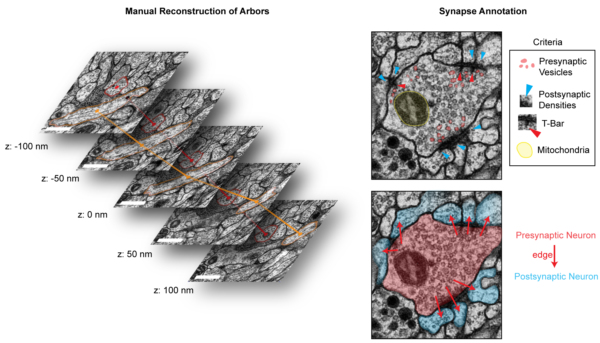
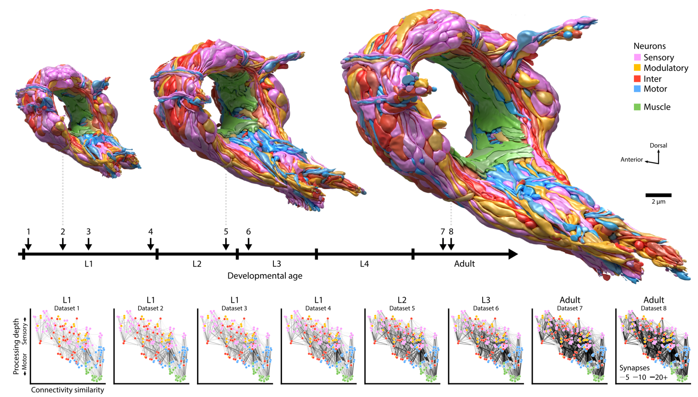
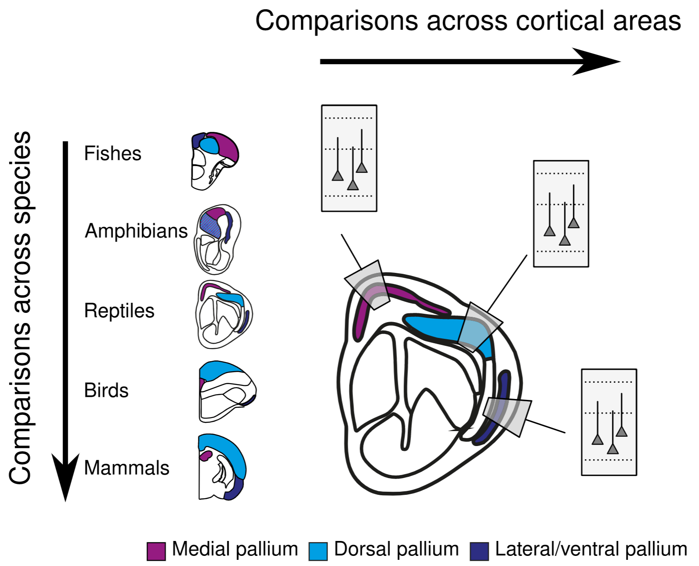
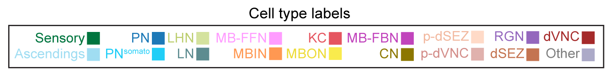
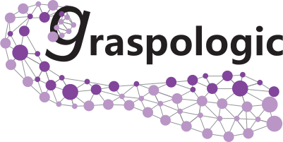
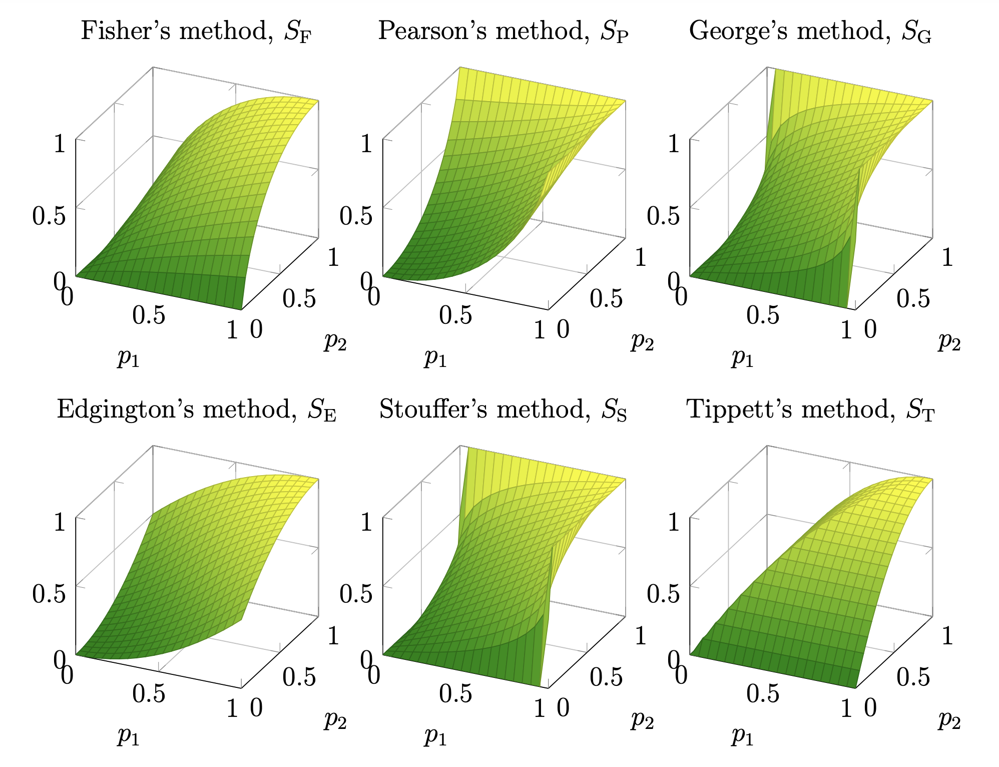
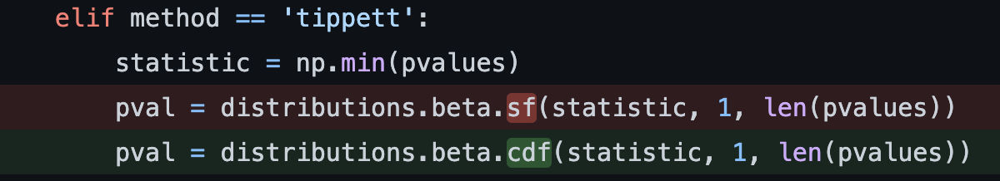
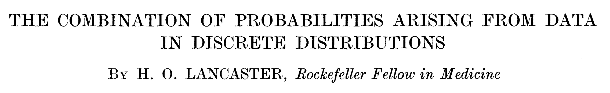

Hypothesis testing for connectome comparisons: a statistical analysis of bilateral symmetry in an insect brain connectome
Contents
Hypothesis testing for connectome comparisons: a statistical analysis of bilateral symmetry in an insect brain connectome#
Benjamin D. Pedigo#
(he/him) - NeuroData lab Johns Hopkins University - Biomedical Engineering
 bpedigo@jhu.edu
bpedigo@jhu.edu
 @bdpedigo (Github)
@bdpedigo (Github)
 @bpedigod (Twitter)
@bpedigod (Twitter)
 https://bdpedigo.github.io/
https://bdpedigo.github.io/

Outline#
What is electron microscopy connectomics
Drosophila larva brain connectome
Why we should care about comparing connectomes
Bilateral symmetry
Extensions and other tools
Electron microscopy connectomics#

Drosophila larva (AKA a maggot) brain connectome#
Collaboration with Marta Zlatic/Albert Cardona’s groups - led by Michael Winding
First whole-brain, single-cell connectome of any insect
~3000 neurons, ~550K synapses
Both hemispheres of the brain reconstructed

We’re just going to consider this to be a network#
.png)
Why bilateral symmetry?#
“We examined the connectivity of members of left–right homologous neuron pairs … to assess the amount of natural variability in connectivity. … Differences between individual worms will be expected to be at least this large.”
“… the gustatory neuron ASEL (that is, the left neuron of the pair) has greater chemical connectivity than ASER (that is, the right neuron of the pair) to the olfactory neuron class AWC.”
Many connectomics questions require comparison#
Connectomes across development#

Connectomes across evolution, cortex#

So, studying bilateral symmetry here lets us#
Try to formalize what we even mean by this property, and make claims about what we find in this connectome, and
Test out methods for comparing networks for these future pursuits
Are the left and right sides of this connectome
different?#
Are these populations different?#

Known as two-sample testing
\(\color{#66c2a5} Y^{(1)} \sim F^{(1)}\), \(\color{#fc8d62} Y^{(2)} \sim F^{(2)}\)
\(H_0: \color{#66c2a5} F^{(1)} \color{black} = \color{#fc8d62} F^{(2)}\)
\(H_A: \color{#66c2a5} F^{(1)} \color{black} \neq \color{#fc8d62} F^{(2)}\)
Are these two networks different?#

Want a two-network-sample test!
\(A^{(L)} \sim F^{(L)}\), \(A^{(R)} \sim F^{(R)}\)
\(H_0: \color{#66c2a5} F^{(L)} \color{black} = \color{#fc8d62}F^{(R)}\)
\(H_A: \color{#66c2a5} F^{(L)} \color{black} \neq \color{#fc8d62} F^{(R)}\)
Assumptions#
We know the direction of synapses, so network is directed.
For simplicity (for now), consider networks to be unweighted.
For simplicity (for now), consider the left \(\rightarrow\) left and right \(\rightarrow\) right (ipsilateral) connections only.
Not going to assume any nodes are matched

Erdos-Renyi model#
All edges are indepentent
All edges generated with the same probability, \(p\)

Density-based testing#

We detect a difference in density#

p-value < \(10^{-22}\)
Stochastic block model#
Edge probabilities are a function of a neuron’s group

Connection probabilities between groups#


Group-based testing#

We detect a difference in group-to-group connection probabilities#

After multiple comparison, find 5 group-to-group connections which are significantly different
Combine (uncorrected) p-values (like a meta-analysis), leads to p-value for overall test of \(<10^{-7}\)
Should we be surprised?#
Already saw that even the overall densities were different
For all significant comparisons, probabilities on the right hemisphere were higher
Maybe the right is just a “scaled up” version of the left?
\(H_0: \color{#66c2a5}B^{(L)} \color{black} = c \color{#fc8d62}B^{(R)}\)
where \(c\) is a density-adjusting constant, \(\frac{\color{#66c2a5} p^{(L)}}{\color{#fc8d62} p^{(R)}}\)

Adjusting for a difference in density#

Even with density adjustment, we detect a difference#


So the Kenyon cells (KCs) are the only group where we detect remaining differences…#

ER test: \(p <10^{-26}\)
SBM test: \(p \approx 0.003\)
Adjusted SBM test: \(p \approx 0.43\)
To sum up…#
Model |
\(H_0\) (vs. \(H_A \neq\)) |
KCs |
p-value |
Interpretation |
|---|---|---|---|---|
ER |
\(\color{#66c2a5} p^{(L)} \color{black} = \color{#fc8d62}p^{(R)}\) |
+ |
\(<10^{-23}\) |
Reject densities the same |
SBM |
\(\color{#66c2a5} B^{(L)} \color{black} = \color{#fc8d62} B^{(R)}\) |
+ |
\(< 10^{-7}\) |
Reject group connection probabilities the same |
aSBM |
\(\color{#66c2a5}B^{(L)} \color{black} = c \color{#fc8d62}B^{(R)}\) |
+ |
\(\approx 0.002\) |
Reject above even after accounting for density |
ER |
\(\color{#66c2a5} p^{(L)} \color{black} = \color{#fc8d62}p^{(R)}\) |
- |
\(<10^{-26}\) |
Reject densities the same (w/o KCs) |
SBM |
\(\color{#66c2a5} B^{(L)} \color{black} = \color{#fc8d62} B^{(R)}\) |
- |
\(\approx 0.003\) |
Reject group connection probabilities the same (w/o KCs) |
aSBM |
\(\color{#66c2a5}B^{(L)} \color{black} = c \color{#fc8d62}B^{(R)}\) |
- |
\(\approx 0.43\) |
Don’t reject above after density adjustment (w/o KCs) |
Extensions (and other tools)#
But you threw out all of the edge weights!#
Thresholding at higher synapse counts reduces asymmetry#

What do we consider to be a “cell type”?#
Hierarchical clustering of neurons based on observed connectivity#


Are nodes/edges matched across hemispheres?#
Bilateral neuron pairs#

Graph matching#

Graph matching predicts single-neuron pairs between hemispheres#
~86% of predicted pairs are confirmed by a human annotator

Predicted pairs are morphologically similar#

In summary…#
Studied statistical ways of framing “bilateral symmetry”, proposing a test procedure for each
All tests found the left and the right hemispheres significantly different, unless ignoring Kenyon cells and adjust for the difference in density
Provided a foundation for future principled comparisons of connectomes
Mentioned several other tools/analyses which could alter the definition of symmetry
Edge weights
Inferring neuron groups
Graph matching to find pairs
graspologic:#
github.com/microsoft/graspologic



This work:#
Acknowledgements#
Johns Hopkins University#
Mike Powell, Eric Bridgeford, Carey Priebe, Joshua Vogelstein, Kareef Ullah, Diane Lee, Sambit Panda, Jaewon Chung, Ali Saad-Eldin, NeuroData lab
University of Cambridge / MRC Laboratory of Molecular Biology#
Michael Winding, Albert Cardona, Marta Zlatic, Chris Barnes
Funding#

Questions?#
Benjamin D. Pedigo#
bpedigo@jhu.edu
@bdpedigo (Github)
@bpedigod (Twitter)
https://bdpedigo.github.io/
Appendix#
There are so many other models!#
Latent distribution test (random dot product graph)


Combining p-values: nobody’s perfect#

Combining p-values: don’t trust SciPy until 1.9.0#

Distribution under the null for combining p-values#

Combining p-values: be careful with discreetness#


\(\leftarrow\) We are trying to approximate this null distribution with something continuous \(Uniform(0,1)\)
Power for combining p-values#
We perturb:
Some # of them (x-axis)
By some amount (panels)

Relative power (Fisher’s vs Tippett’s)#

Plotting connection probabilities#